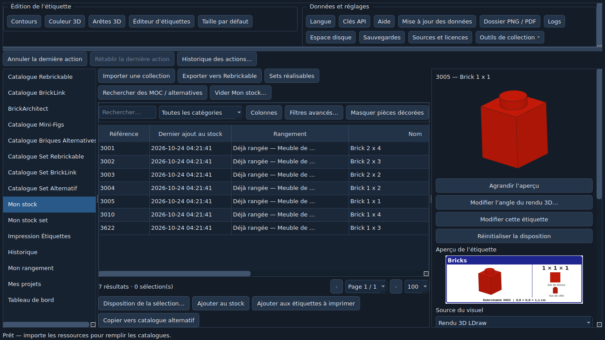
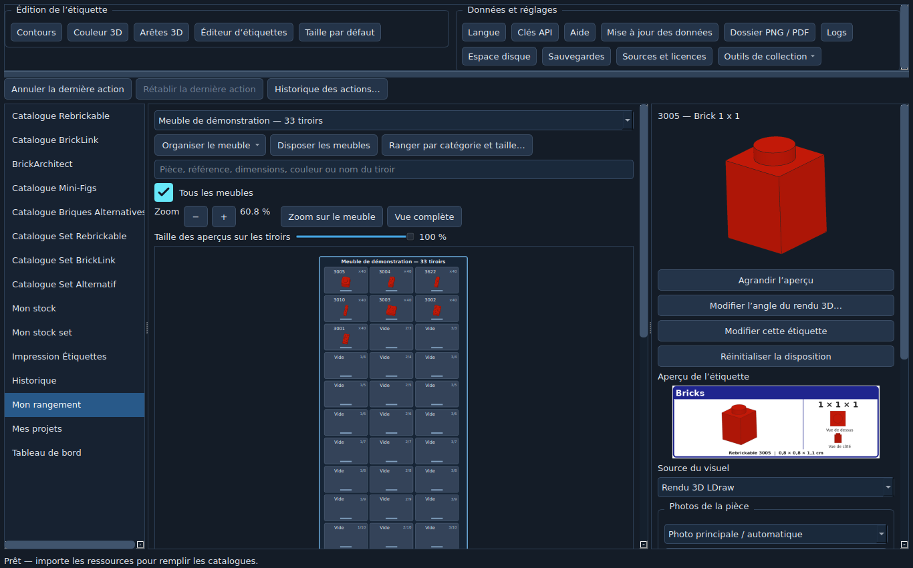
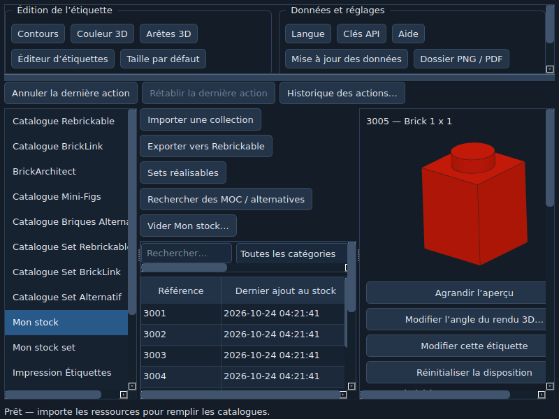

BrickLabo — Guide de démarrage
Du catalogue à vos tiroirs, puis à vos constructions. Ce guide suit une petite collection de démonstration ; vos données personnelles restent dans Donnees.
Version 0.1.73 · English · Aide complète · Toutes les nouveautés et validations
1. Installer et remplir les catalogues
- Télécharger le ZIP Complet de la release GitHub et l’extraire entièrement dans un dossier accessible en écriture. Lancer
BrickLabo.exe. Les archives « Source code » automatiques de GitHub ne sont pas installables. - Au premier lancement, laisser importer les ressources fournies. Un catalogue décrit les références existantes ; il ne déclare aucune possession.
- Pour actualiser les données : Mise à jour des données. Importer les fichiers Rebrickable CSV/ZIP, BrickLink TXT ou la bibliothèque LDraw. Le bouton de mise à jour officielle LDraw conserve l’archive active si la nouvelle ne peut pas être validée.
- Le chargement d’inventaires par lots continue avec sa fenêtre fermée tant que BrickLabo reste ouvert. Cliquer sur Inventaires : traités/total dans la barre d’état pour suivre, mettre en pause ou reprendre. Fermer le logiciel conserve la file restante.
Les recherches locales utilisent les inventaires déjà chargés. Une clé API peut être nécessaire pour compléter les données à distance : voir l’aide des accès API. Un inventaire absent ou incomplet limite les résultats.
2. Distinguer les deux stocks
| Écran | Ce qui est compté | Exemple |
|---|---|---|
| Mon stock | Pièces et minifigurines en vrac, par référence et couleur. | 40 briques 3005 rouges. |
| Mon stock set | Sets possédés et leurs composants suivis, conservés séparément du vrac. | Un set 30363-1 que vous pourrez démonter. |
| Catalogue de sets | Inventaires de référence, sans possession. | Consulter un set avant de l’acheter. |
Depuis le clic droit sur un set, choisir l’ajout du set possédé ou de ses pièces au vrac. Dans Importer une collection, vérifier source, destination et quantités avant l’ajout. Les lignes incorrectes restent dans l’assistant pour correction et reprise. La colonne de date d’entrée et les lots d’import aident à retrouver un ajout erroné. Annuler la dernière action et l’historique permettent de revenir sur les opérations prises en charge.

3. Préparer vos meubles et ranger les pièces
- Ouvrir Mon rangement → Organiser le meuble, créer un meuble et choisir ses colonnes et rangées. Dupliquer son format pour ajouter d’autres meubles.
- Avec Aligner les meubles → En grille, choisir par exemple quatre meubles par rangée pour un mur de huit meubles en deux rangées. Le nombre de meubles et de tiroirs reste évolutif.
- Dans Pièces à ranger, choisir le vrac ou un catalogue, filtrer puis glisser la sélection sur un tiroir. Un lien depuis un catalogue prépare un emplacement sans créer de stock.
- Ranger par catégorie et taille en tenons prépare un brouillon. Cocher les critères voulus : catégorie, forme/famille, taille, référence et éventuellement couleur. Choisir un meuble ou tous les meubles, l’ordre des catégories et le nombre de tiroirs par référence directement dans le tableau.
- Ajuster les destinations dans l’aperçu : glissement pour déplacer/échanger ; clic droit pour ajouter une autre référence. Seul Appliquer le rangement proposé enregistre le plan.
Le survol d’un tiroir affiche son contenu ; le double-clic ouvre son inventaire. Pour répartir 40 pièces entre deux tiroirs, saisir des quantités comptées de 20 et 20. Les quantités localisées ne s’ajoutent pas à la possession totale. La colonne Rangement indique si une référence a déjà un tiroir, même lorsqu’une étiquette contient plusieurs références enregistrées dans le contenu.

4. Chercher des sets et suivre un projet
Dans Sets réalisables avec mon stock → Choisir le stock utilisable, choisir le vrac, des sets possédés à démonter, ou les deux. Les composants des sets cochés peuvent servir sans transfert préalable au vrac. Choisir le seuil de couverture et, si souhaité, Ignorer les couleurs et l’exclusion des minifigurines. Chaque résultat est calculé séparément : les mêmes pièces peuvent être proposées pour plusieurs constructions alternatives.
Envoyer un résultat dans Mes projets. Le projet conserve le mode de couleurs ; l’option Compter aussi les pièces de mes sets possédés ajoute l’apport des sets. Affecter des sets possédés réserve leurs exemplaires à un projet. Réserver le vrac rend ses unités indisponibles aux autres projets, sans les retirer du stock. La liste de prélèvement montre quoi prendre et où ; Déjà prélevées suit les prises enregistrées.
Si un résultat paraît incomplet, vérifier les inventaires disponibles, les couleurs, les minifigurines, les réservations et les exemplaires déjà affectés. Les correspondances de références incertaines ne sont pas assimilées automatiquement.
5. Créer des étiquettes de 65 × 23 mm
Dans Taille par défaut, saisir 65 mm de largeur et 23 mm de hauteur. Dans Éditeur d’étiquettes, choisir le modèle : vue principale seule, vue principale et dessous, ou composition avec vues complémentaires. Les modèles personnalisés, l’application à une catégorie et la disposition d’une sélection multiple évitent de recommencer pièce par pièce.
Ajouter les lignes à Impression Étiquettes, choisir le dossier PNG / PDF, puis générer le format voulu. Les arêtes épaisses concernent les grands aperçus et étiquettes ; les petites miniatures gardent des traits fins. Réinitialiser la couleur ou la disposition remet les valeurs héritées correspondantes.

Imprimer une page de test à 100 % / taille réelle, sans ajustement automatique, puis mesurer 65 × 23 mm à la règle avant toute série. Pour les meubles, ouvrir Organiser le meuble → Imprimer les meubles sur A4 : une page par meuble ou une vue d’ensemble, portrait/paysage. Ce guide ne confirme pas un essai physique sur votre imprimante.
6. Garder les commandes accessibles sur petit écran
Faire glisser la séparation horizontale sous le volet supérieur pour réduire sa hauteur et agrandir les tableaux. Les groupes de boutons et panneaux disposent de défilements. Agrandir un panneau en déplaçant les séparations verticales. Les commandes dépassant la largeur restent accessibles par les barres de défilement.

7. Sauvegarder, restaurer et mettre à jour
- Sauvegardes → Sauvegarder maintenant produit un ZIP privé. Le placer sur un autre support ou dans un dossier extérieur à
Donnees. Les sauvegardes automatiques et points de retour avant opérations importantes se règlent dans le même menu. - Une sauvegarde complète inclut les données et peut contenir des clés API. Ne pas la publier. Les exports sélectifs permettent de choisir les familles et omettent les clés par défaut.
- Pour tester une restauration sans risque, utiliser une copie de BrickLabo dans un nouveau dossier. La restauration complète s’applique au redémarrage et garde les anciennes données dans le dossier de retour indiqué.
- Mise à jour des données → Rechercher une mise à jour du logiciel recherche les releases stables publiques et vérifie le ZIP complet et son SHA-256. Conserver une sauvegarde puis choisir Installer et redémarrer ; fermer les autres instances.
Pour une installation manuelle, extraire la nouvelle version dans un nouveau dossier et recopier Donnees après avoir fermé l’ancienne. Conserver l’ancienne installation jusqu’à vérification. Une ancienne version peut nécessiter une sauvegarde de données compatible.
8. Consulter depuis le téléphone en Wi-Fi
Connecter PC et téléphone au même réseau local. Dans Outils de collection → Consultation sur téléphone, démarrer le service, ouvrir sur le téléphone l’une des adresses locales affichées et saisir le code. PC et BrickLabo restent ouverts. Le téléphone consulte les quantités et les emplacements en lecture seule. Arrêter l’accès ferme les sessions. Aucun compte cloud ni QR code n’est nécessaire. Une option A4 peut ajouter l’adresse en texte ; le code d’accès n’est pas imprimé.
9. Signaler un problème utilement
Indiquer la version exacte, Windows, l’action, la référence concernée et la différence entre quantité attendue et observée. Joindre une capture masquant les informations personnelles et l’extrait du journal pertinent. Pour un crash, noter si une tâche 3D, un import ou une fermeture de fenêtre était en cours. Les tests automatisés, essais Windows, impressions physiques et permissions de redistribution restent suivis séparément dans la qualification finale.